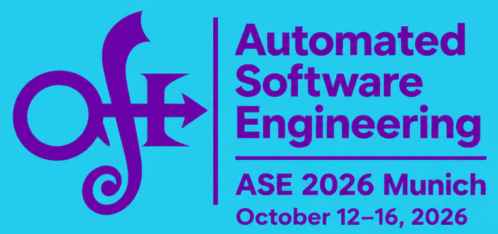

ASE 2026
Conference Ranking: CORE A*
All or Nothing: How Library Type Annotations Affect Client-Side Errors in Python
Asare, E.; Di Grazia, L.; Nadi, S.
A large-scale study of Python projects found that third-party libraries are a major source of type errors, and that the full benefits of static typing are only achieved when widely used libraries have near-complete type annotations.
DOI
@inproceedings{asare2026allornothing,
title = {All or Nothing: How Library Type Annotations Affect Client-Side Errors in {Python}},
author = {Asare, Eric and Di Grazia, Luca and Nadi, Sarah},
booktitle = {Proceedings of the 41st IEEE/ACM International Conference on Automated Software Engineering (ASE '26)},
publisher = {ACM},
year = {2026},
pages = {1308--1319},
doi = {10.1145/3832783.3834434}
}